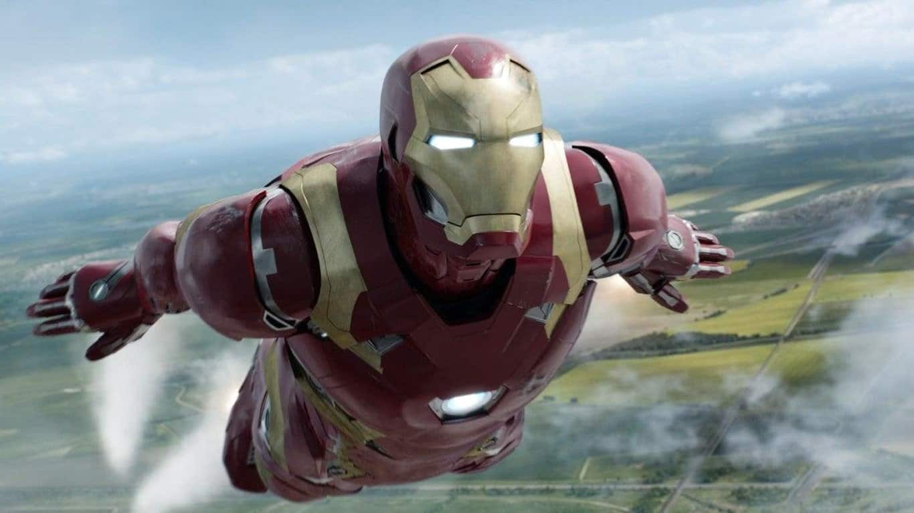

MARVEL
Vingadores
O filme The Avengers: os Vingadores apresenta os seis membros iniciais da famosa equipe de super-heróis: Homem de Ferro/Tony Stark (Robert Downey Jr.), o Incrível Hulk/Bruce Banner (Mark Ruffalo), Capitão América/Steve Rogers (Chris Evans), Thor (Chris Hemsworth), Viúva Negra/Natasha Romanoff (Scarlett Johansson) e Gavião Arqueiro /Clint Barton (Jeremy Lee Renner). Nick Fury (Samuel L. Jackson) foi o autor da iniciativa “Vingadores”. O diretor da S.H.I.E.L.D. teve a ideia de reunir os super-heróis mais poderosos da Terra para serem a primeira linha de defesa do planeta contra as ameaças mais poderosas do universo. Após os eventos que ocorrem em títulos subsequentes — Vingadores: Era de Ultron, Vingadores: Guerra Infinita e Vingadores: Ultimato — a equipe ganhou novos membros e aliados para enfrentar inimigos poderosos. Disney

Quem são e quais poderes têm os membros iniciais de Os Vingadores?
Homem de Ferro
Tony Stark (Homem de Ferro) é um gênio e bilionário que usa suas habilidades e inteligência para desenvolver armas de alta tecnologia. Confiante, costuma transmitir um ar de arrogância, mas conquista a todos com seu humor particular e bom coração. Disney
Hulk
O incrível Hulk surge após o cientista Bruce Banner ter sido exposto acidentalmente a uma alta concentração de raios gama. Bruce é apresentado como alguém tranquilo e de boas maneiras que, quando provocado, se transforma em uma criatura de força e raiva incontroláveis. Disney
Thor
Filho de Odin, o Deus do Trovão usa suas habilidades para controlar as forças da natureza e proteger Asgard (seu planeta natal), a Terra e todos os Nove Reinos. Para isso, ele tem a força de seu Mjolnir, um poderoso martelo que seu pai, o Rei de Asgard, lhe deu. Com grande força e resistência, é leal aos seus princípios e aos seus companheiros. Disney

Capitão América
Steve Rogers, o primeiro Vingador, é o líder da equipe. Ele é um militar que participou do projeto Super-Soldado do Exército dos Estados Unidos durante a Segunda Guerra Mundial. Possui extrema força, resistência, velocidade e reflexos rápidos. Nick Fury o convida para fazer parte da equipe após o super-herói passar décadas preso no gelo. Disney

Viúva Negra
Treinada desde jovem para se tornar uma assassina perspicaz, Natasha Romanoff deixou seus mestres para trás e decidiu juntar-se aos "mocinhos" a partir do momento que entra para Os Vingadores. Apesar de não ter poderes sobre-humanos, ela tem habilidades em artes marciais e tem grande destreza, força e agilidade. Disney
Gavião Arqueiro
Exímio atirador e lutador, Clint Barton já fazia parte da S.H.I.E.L.D quando Nick Fury decidiu convidá-lo para se juntar aos Vingadores. Grande amigo de Natasha Romanoff, foi ele quem a convidou para integrar o grupo de super-heróis. Disney

Torre dos Vingadores
A Torre dos Vingadores erguida por Tony Stark nos filmes da Marvel se tornou uma das estruturas mais icônicas da cultura pop nos últimos anos. O ponto curioso é que ela nunca apareceu nos quadrinhos na mesma glória que é retratada nas telonas.
Sim, os Vingadores já tiveram diversas bases de operação, mas nada equivalente à Torre dos filmes. Até agora. Recentemente, o local apareceu nos quadrinhos da Marvel em Old Man Hawkeye. Legião dos heróis

Próximos Lançamentos
A Marvel Studios está constantemente alterando as datas de lançamento de vários filmes e séries em seu calendário. Com tantas novidades surgindo o tempo todo. Confira os próximos lançamentos de 2024. Disney Plus Brasil
Deadpool & Wolverine
O que: Filme
Quando: 25 de julho de 2024
Onde: Cinemas
Agatha All Along
O que: Série
Quando: 18 de setembro de 2024
Onde: Disney+
Your Friendly Neighborhood Spider-Man
O que: Série
Quando: 2 de novembro de 2024; A série foi renomeada em dezembro de 2023
Onde: Disney+
Venom: A Última Rodada
O que: Filme
Quando: 24 de outubro de 2024
Onde: Cinemas
Kraven: O Caçador (Sony Pictures)
O que: Filme
Quando: 13 de dezembro de 2024
Onde: Cinemas
Eyes of Wakanda
O que: Série
Quando: Anunciado para 2024
Onde: Disney+